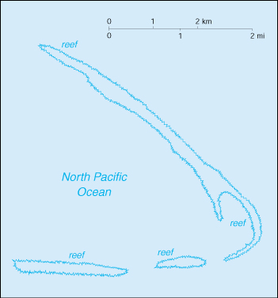

{kind=link}


| Kingman Reef |
|
|  | |
| Geography |
Location: Oceania, reef in the North Pacific Ocean, about one-half of the way from Hawaii to American Samoa
Geographic coordinates: 6 24 N, 162 24 W
Map references: Oceania
Area:
total:
1 sq km
land:
1 sq km
water:
0 sq km
Area - comparative: about 1.7 times the size of The Mall in Washington, DC
Land boundaries: 0 km
Coastline: 3 km
Maritime claims:
exclusive economic zone:
200 nm
territorial sea:
12 nm
Climate: tropical, but moderated by prevailing winds
Terrain: low and nearly level
Elevation extremes:
lowest point:
Pacific Ocean 0 m
highest point:
unnamed location 1 m
Natural resources: none
Land use:
arable land:
0%
permanent crops:
0%
permanent pastures:
0%
forests and woodland:
0%
other:
100%
Irrigated land: 0 sq km (1996)
Natural hazards: wet or awash most of the time, maximum elevation of about 1 meter makes Kingman Reef a maritime hazard
Environment - current issues: none
Geography - note: barren coral atoll with deep interior lagoon; closed to the public
| People |
Population: uninhabited (July 2000 est.)
| Government |
Country name:
conventional long form:
none
conventional short form:
Kingman Reef
Data code: KQ
Dependency status: unincorporated territory of the US; administered from Washington, DC by the US Navy; however, it is awash the majority of the time, so it is not usable and is uninhabited
Flag description: the flag of the US is used
| Economy |
Economy - overview: no economic activity
| Transportation |
Ports and harbors: none; offshore anchorage only
Airports: lagoon was used as a halfway station between Hawaii and American Samoa by Pan American Airways for flying boats in 1937 and 1938
| Military |
Military - note: defense is the responsibility of the US
| Transnational Issues |
Disputes - international: none